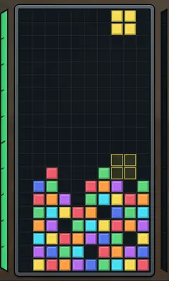

Still Air
Still Air is step 2 of The Warlord's Iron, given by  Brann.
Brann.
Objective
Stop 3 Dust Devils with a clear.
His Dust Devil rips blocks off the side of your tower. Land a clear on him and it stops. Stop three.Brann
Requirements
- Turn in Unpaid Wages first.
- It can be worked on before level 50, and is turned in at it.
Rewards
 Adamantite Ingot
Adamantite Ingot6,985 experience.
Walkthrough
- Find Scrap Warlord:
- Sand Storm, in the Red Desert Story (fight 3 of the road)
- the Endless Dungeon's Sand Storm: a round boss; the warden its chest follows

Wait for Scrap Warlord's Dust Devil. A dust devil rips 2 blocks off the side of your tower every 3 seconds. Any hit stops it.- Do it 3 times in all: Stop 3 Dust Devils with a clear. Every answer counts, in any mode, over as many fights as it takes.
- Turn it in to Brann on the QUESTS screen.
Tips
- Any hit stops the Dust Devil. Keep one row nearly full so you can land a clear the moment it starts.
- It rips two blocks every three seconds, so the sooner the better.
Changes
Not written yet
What changed in this quest, update by update.
| The Warlord's Iron | |
|---|---|
| Steps | Unpaid Wages · Still Air · Broken Horns · Forged Horns |
| Next | Broken Horns |